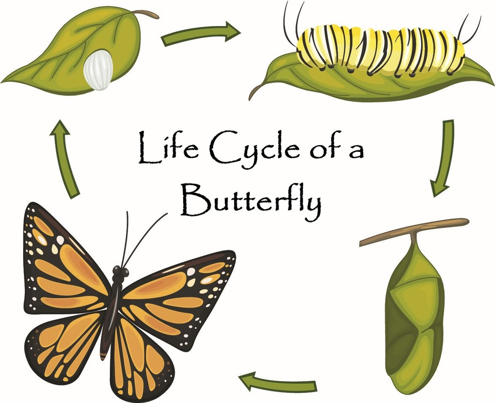

Introduction
Butterflies are winged insects from the lepidopteran superfamily Papilionoidea, known for
their
large,
often
brightly colored wings and fluttering flight. The oldest butterfly fossils date back to the
Paleocene,
about
56 million years ago, although molecular evidence suggests they likely originated in the
Cretaceous.
Butterflies undergo a four-stage life cycle, including egg, larva (caterpillar), pupa
(chrysalis),
and
adult. Some species have multiple generations per year, while others, especially in colder
climates,
may
take several years to complete their cycle.
Many butterflies are polymorphic and use camouflage, mimicry, or aposematism to avoid
predators.
Some
species, like the monarch and painted lady, migrate long distances. Butterflies also face
predation
from
parasites and other animals.
Culturally, butterflies are a popular symbol in art and literature, often considered one of
nature's
most
appealing creatures.
Taxonomy and Phylogeny
The earliest Lepidoptera fossils date to the Triassic-Jurassic boundary, around 200 million
years
ago. Butterflies evolved from moths, so while the butterflies are monophyletic (forming a
single
clade), the moths are not. The oldest known butterfly is Protocoeliades kristenseni from the
Palaeocene aged Fur Formation of Denmark, approximately 55 million years old, which belongs
to the
family Hesperiidae (skippers). Molecular clock estimates suggest that butterflies originated
sometime in the Late Cretaceous, but only significantly diversified during the Cenozoic,
with one
study suggesting a North American origin for the group.The oldest American butterfly is the
Late
Eocene Prodryas persephone from the Florissant Fossil Beds, approximately 34 million years
old.
Paleontology
Butterflies are divided into six families that contain a total of about 20,000
species.
Traditionally, butterflies have been divided into the superfamilies Papilionoidea and the moth-like Hedyloidea. Recent work has discovered that Hedylidae, the only family within Hedyloidea, is nested within the Papilionoidea, meaning that Papilionoidea would be synonymous with Rhopalocera. The relationships between the rest of the 6 families are extremely well resolved, which is summarized in the below cladogram.
Traditionally, butterflies have been divided into the superfamilies Papilionoidea and the moth-like Hedyloidea. Recent work has discovered that Hedylidae, the only family within Hedyloidea, is nested within the Papilionoidea, meaning that Papilionoidea would be synonymous with Rhopalocera. The relationships between the rest of the 6 families are extremely well resolved, which is summarized in the below cladogram.
The life cycle of a butterfly is a fascinating journey of transformation. They go through four different
stages in their life cycle, each a vital part of its development. Let's explore the key stages that make
up
the butterfly's life cycle!
Egg
The life cycle starts with the adult female butterfly laying a cluster of small, round eggs
on
plants,
which become food for the tiny worm-like caterpillars that hatch 4-6 days after they are
laid.
Adult
In this stage, the chrysalis opens, and the adult butterfly or imago comes out. The adult
butterfly
has
long antennae, long legs, and compound eyes. When it first emerges from the chrysalis, its
long,
colorful wings are damp, soft, and are folded against the body. The butterfly rests and
waits
for
the
wings to dry. Once fit for its first flight, the butterfly takes off in search of
nectar-producing
flowers. Adult females fly from one place to another to find plants suitable for laying
eggs.
While
most
butterflies live for 1-2 weeks, some species spend the winter as hibernating adults,
surviving
for
several months.

Caterpillar
It is the larval stage during which the caterpillar emerges from the egg. It is also
called
the feeding stage because, at this stage, a caterpillar has only one job to do that
is
to
eat.
Pupa
After a caterpillar attains its full-grown size, it stops eating and enters its
chrysalis
for the pupal stage.
Fun Facts
The Monarch butterfly caterpillar that hatches from its egg is about 2-6 mm long but
grows up to
2
inches within a few weeks.
Swallowtail butterflies spend the winter in the chrysalis stage, with the adults
emerging in
spring to
search for host plants.
Not all the larvae or caterpillars turn into adult butterflies because the immature
larvae of
moths are
also called caterpillars.
The Most Common Butterflies
Danus genutia
The butterfly closely resembles the monarch butterfly (Danaus plexippus) of the Americas. The
wingspan
is 70 to 95 millimetres (2.8 to 3.7 in). Both sexes of the butterfly have tawny wings with veins
marked
with broad black bands. The male has a pouch on the hindwing. The margins of the wings are black
with
two rows of white spots. The underside of the wings resembles the upperside but is paler in
colouration.
The male common tiger has a prominent black-and-white spot on the underside of the hindwing. In
drier
regions the tawny part of the hindwing pales and approaches white in colour making it very
similar
to
the white tiger (D. melanippus).
The Rarest Butterflies
Papilio laotianus
The Malayan Banded Swallowtail is one of Singapore's rarest and most elusive butterflies. With
its
striking green and black banded wings and long, graceful tails, it's a breathtaking sight for
those
fortunate enough to encounter it. Found primarily in Singapore's tropical rainforests,
particularly
in
nature reserves like Bukit Timah and MacRitchie, this butterfly is classified as Endangered due
to
habitat loss and environmental changes. As a symbol of the country's rich biodiversity, the
Malayan
Banded Swallowtail reminds us of the importance of conserving Singapore's unique natural
heritage.
The Most Beautiful Butterflies
Troides helena
The Common Birdwing is Singapore's national butterfly and one of the most beautiful and iconic
butterflies in Southeast Asia. With its large, striking wings, the male boasts vibrant yellow
and
black
patterns with iridescent green accents, while the female is larger and more subdued in color.
This
butterfly is known for its graceful flight and can be spotted in Singapore's nature reserves,
particularly in areas like Bukit Timah Nature Reserve and MacRitchie Reservoir. A symbol of
natural
beauty, the Common Birdwing is admired not only for its stunning appearance but also for its
cultural
significance as a reflection of Singapore's rich biodiversity.
There are more than 28,000 species of butterflies throughout the world. These insects live and breed in
diverse habitats such as the mangroves, salt marshes, lowland forested areas, wetlands, mountain zones,
and
in grasslands. Butterflies tend to be habitat-specific meaning that some of the species will only be
found
in specific places such as only in the coastal areas or only in the mountain zones. The major role of
butterflies in the ecosystem is that of pollination.
Indicators of a Healthy Environment
- A. They are the main predators in most ecosystems.
- B. Their behavior and population respond sensitively to environmental changes.
- C. They eliminate invasive species from habitats.
- D. Their presence prevents climate change.
B.
Butterflies are key indicators of ecosystem health, reflecting environmental changes like habitat loss and climate change. As pollinators, they enhance biodiversity, supporting plant growth and attracting other animals, including invertebrates. Their sensitivity to environmental threats makes them useful for monitoring ecosystem changes. A decline in butterfly populations or behavioral shifts can signal potential ecological crises, such as habitat destruction or climate-related impacts.
Butterflies are key indicators of ecosystem health, reflecting environmental changes like habitat loss and climate change. As pollinators, they enhance biodiversity, supporting plant growth and attracting other animals, including invertebrates. Their sensitivity to environmental threats makes them useful for monitoring ecosystem changes. A decline in butterfly populations or behavioral shifts can signal potential ecological crises, such as habitat destruction or climate-related impacts.
Plant Pollinators
- A. By laying eggs on flower petals.
- B. By carrying pollen from one flower to another during nectar feeding.
- C. By eating harmful insects on flowers.
- D. By producing pollen in their wings.
B.
When butterflies visit flowers for nectar-feeding, pollen grains often get attached to their bodies. As they fly from flower to flower, they often deposit the pollen on another plant, allowing fertilization to occur.
When butterflies visit flowers for nectar-feeding, pollen grains often get attached to their bodies. As they fly from flower to flower, they often deposit the pollen on another plant, allowing fertilization to occur.
A Source of Food to Other Organisms
- A. They help trees grow faster by nesting in them.
- B. They directly feed on larger animals like birds and mice.
- C. They serve as a crucial food source for many animals, helping transfer nutrients across the food chain.
- D. They clean up waste from the forest floor.
C.
Butterflies are an essential food source for many animals, including birds, bats, ants, mice, and other insectivores. Their role in the food chain helps transfer nutrients across ecosystems, connecting vegetation, herbivores, omnivores, and microorganisms. A decline in butterfly populations can lead to a ripple effect, reducing the populations of animals that depend on them, such as birds and mice. For example, the Blue Tit bird in Ireland consumes around 50 billion moth caterpillars annually.
Butterflies are an essential food source for many animals, including birds, bats, ants, mice, and other insectivores. Their role in the food chain helps transfer nutrients across ecosystems, connecting vegetation, herbivores, omnivores, and microorganisms. A decline in butterfly populations can lead to a ripple effect, reducing the populations of animals that depend on them, such as birds and mice. For example, the Blue Tit bird in Ireland consumes around 50 billion moth caterpillars annually.
Reduce Pollution
- A. By reflecting sunlight with their wings.
- B. By migrating to cooler areas.
- C. By feeding on polluted plants.
- D. By absorbing carbon dioxide from the atmosphere.
D.
Some species of butterflies help to reduce air pollution by absorbing carbon dioxide from the atmosphere. High levels of atmospheric carbon dioxide contribute to global warming. Examples of these butterflies are monarch butterflies and caterpillars.
Some species of butterflies help to reduce air pollution by absorbing carbon dioxide from the atmosphere. High levels of atmospheric carbon dioxide contribute to global warming. Examples of these butterflies are monarch butterflies and caterpillars.
Feed Your Butterfly
Butterfly: